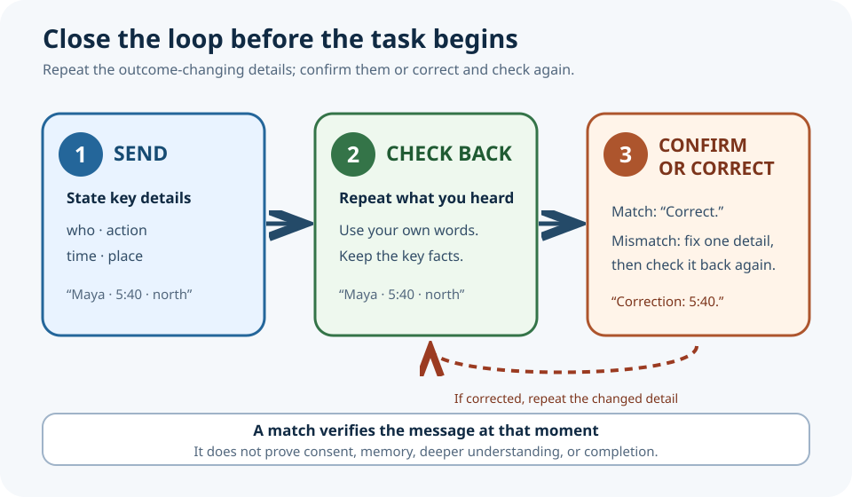

01 · Visual model
Make the receiver's version visible

Text equivalent: First, the sender states the person, action, time, place, or other outcome-changing details. Second, the receiver repeats those details in their own words. Third, the sender says they match or corrects a mismatch. A corrected detail is repeated again.
02 · Foundations
Acknowledgment is not yet a check-back
“Okay” acknowledges
It may show that a message arrived, but it does not reveal which version arrived.
A repeat exposes details
The sender can compare names, numbers, locations, actions, and sequence against the intended message.
Confirmation closes
“Correct” closes a match. A specific correction reopens the loop until the changed detail matches.
03 · Worked example
One digit changes the pickup
The error becomes visible before anyone travels. The loop verifies the exchanged details; it still cannot guarantee that the receiver will remember or complete the pickup.
04 · Judgment
Use the loop where a mismatch matters
| Useful for | Use another approach for |
|---|---|
| Names, times, places, quantities, sequence, handoffs, and changes | Exploring feelings, brainstorming, or low-stakes remarks that do not require exact action |
| Short, concrete coordination where both people can respond | Broadcasts with no response path; follow up through a channel that supports acknowledgment |
Privacy boundary: Do not repeat passwords, account numbers, medical details, or other sensitive information in a public place or insecure channel. Confirm only the minimum necessary detail in an appropriate channel.
05 · Practice
Run the 15-minute check-back card
Open the check-back communication card. Write a non-sensitive coordination message, run it once without sharing notes, correct one mismatch if needed, and name what the match still does not prove.
Knowledge check
- What information does “got it” fail to reveal?
- When does a correction close the loop?
- Name two things a matching repeat does not prove.
Reveal answer guidance
“Got it” does not reveal the receiver's version of the details. A correction closes only after the receiver repeats the corrected detail accurately and the sender confirms it. A match does not prove consent, memory, deeper understanding, or completion.
06 · Next steps
Compare everyday use with formal practice
Read AHRQ's Check-Back tool for the three-party-message pattern and examples. Then compare it with the FAA controller requirement to ensure instruction read-backs are correct. Formal aviation rules are not everyday scripts, but they make the verification step easy to see. The source ledger records the transfer limits.